Genuine Android emulator captures from the API 35 route test. Phone viewport: 1080×2400 pixels; phone landscape: 2400×1080; short landscape: 1280×720. Tablet-sized layouts use emulator display overrides, not physical tablet hardware.
Animals & Nature navigation
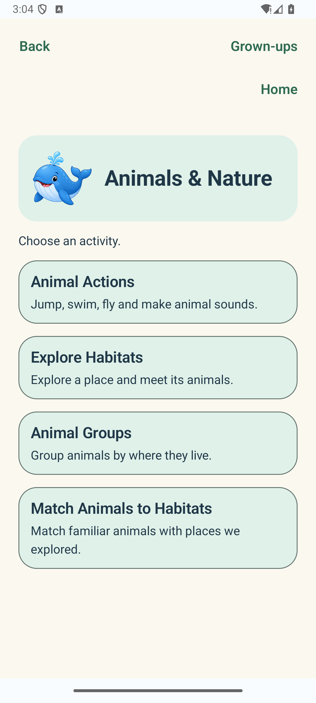
Animals & Nature category · English · activity choices · 1080×2400 · 1×The new matching card appears beside the existing habitat and animal activities.
Question and feedback states
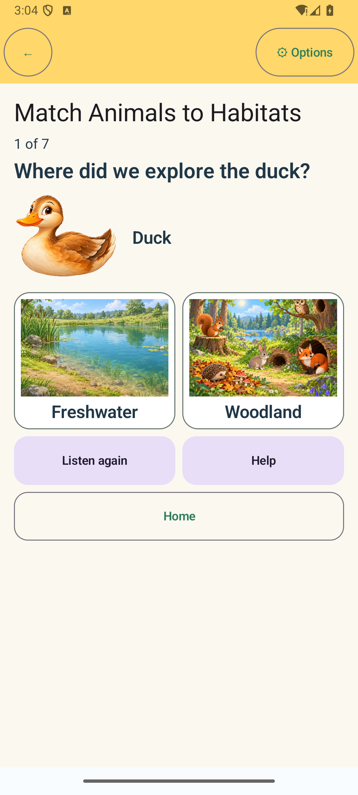
Question · English · active · 1080×2400 · 1×Large prompt and animal illustration precede two image-led habitat choices.
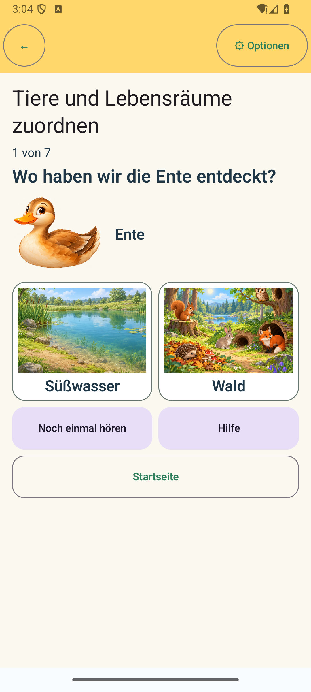
Question · German · active · 1080×2400 · 1×German prompt and labels retain the same question and canonical answer identities.
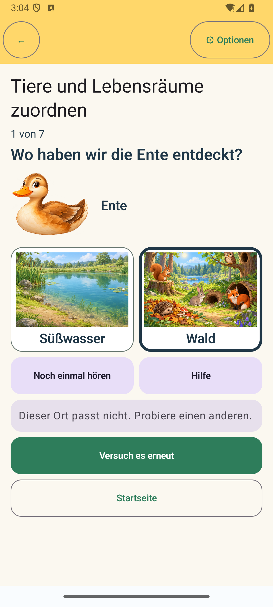
Feedback · German · incorrect answer and retry · 1080×2400 · 1×The selected option has a thick outline; neutral feedback and an explicit retry action are visible.
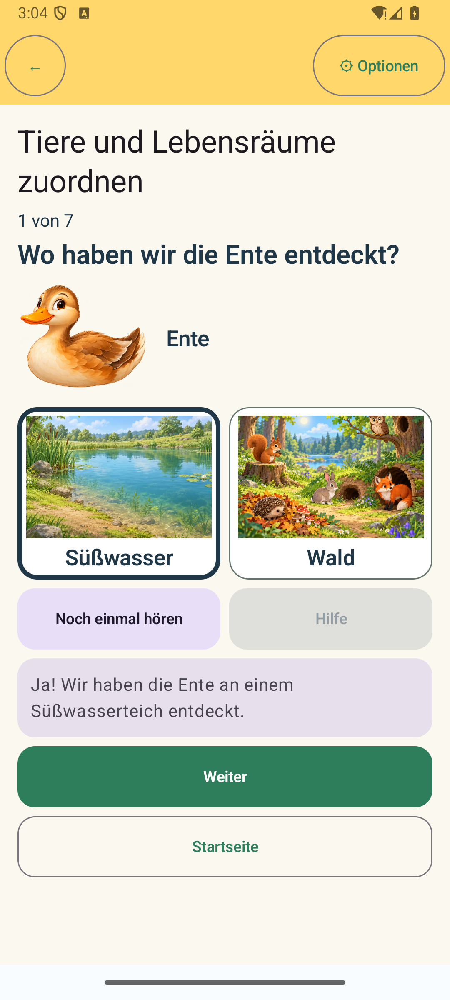
Feedback · German · correct answer · 1080×2400 · 1×Correctness is conveyed by text, a selected outline, and a clear Continue button, not colour alone.
Progress · German · second question · 1080×2400 · 1×Continue advances predictably and the progress indicator reads “2 von 7”.
Restoration and completion
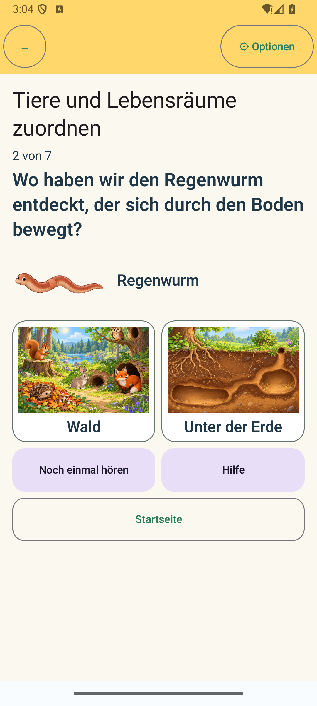
Restoration · German · Activity recreated · 1080×2400 · 1×The same question and progress position are rendered after Activity recreation.
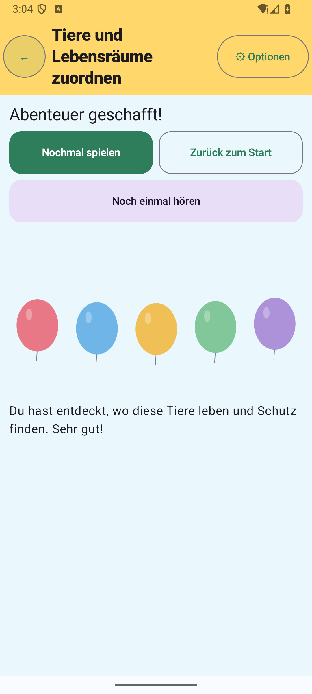
Completion · German · seven questions complete · 1080×2400 · 1×The completion treatment is separate from the question screen; the instrumentation verifies one completion result and its seven task records.
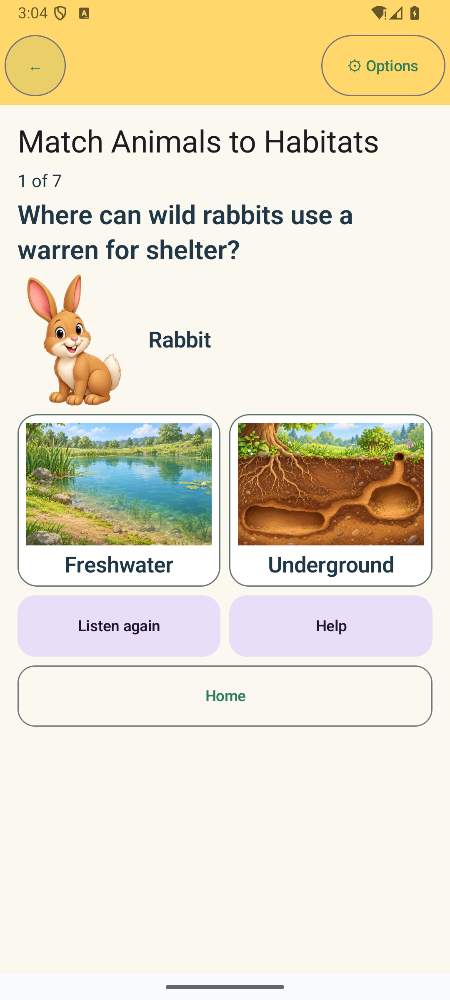
Options return · English · new session question · 1080×2400 · 1×Returning from Options updates language while preserving the current session state.
Responsive layouts
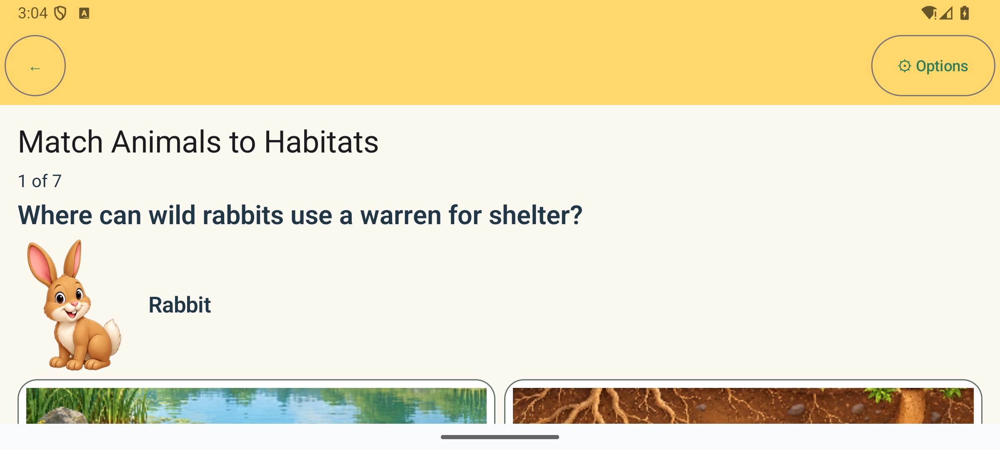
Phone landscape · English · initial question viewport · 2400×1080 · 1×The task prompt is visible on entry; the choices and Replay remain reachable by scrolling.
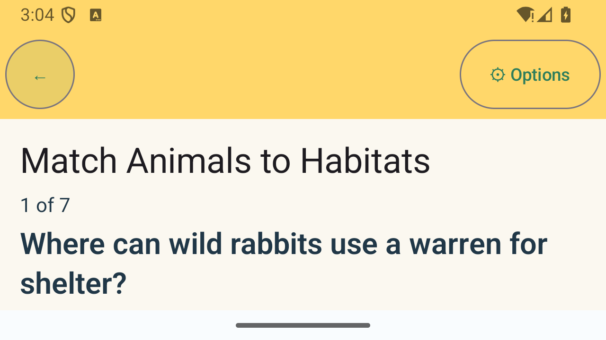
Short landscape · English · initial question viewport · 1280×720 · 1×The instruction is visible before scrolling; the animal choices and Replay are reachable below.
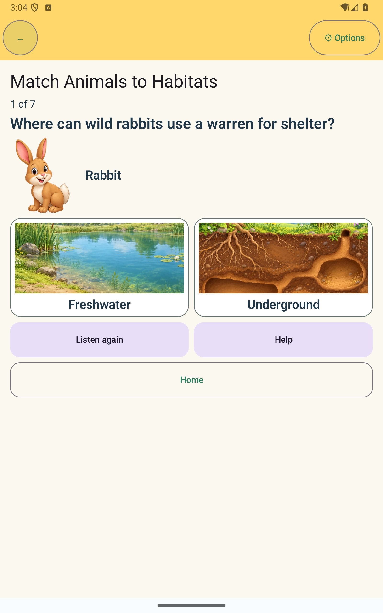
Tablet portrait · English · question · 1600×2560 emulator viewport override · 1×Wide cards use available space while keeping the animal, question, and options in a clear vertical order.
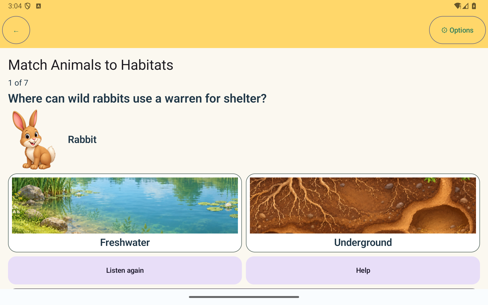
Tablet landscape · English · question · 2560×1600 emulator viewport override · 1×The choices sit side by side with large image previews; this is an emulator viewport simulation, not physical tablet testing.
German enlarged text
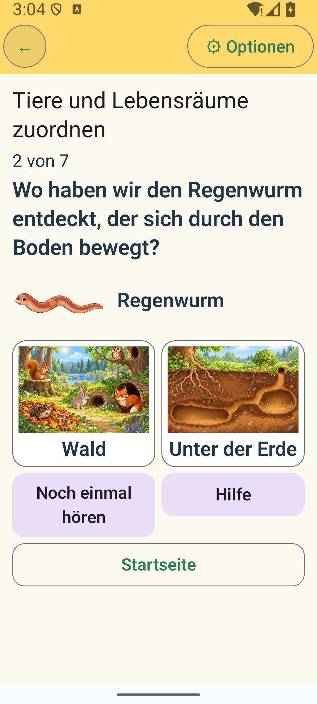
Question · German · 1.5× font scale · 1080×2400Prompt, animal, choices, Replay, Help, and Home remain usable with scrolling.
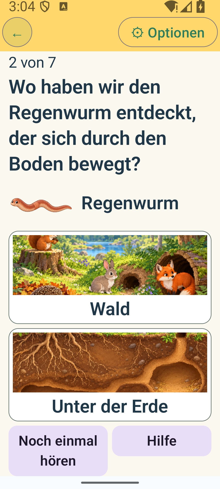
Question · German · 2× font scale · 1080×2400Habitat choices switch to one column to preserve full-width labels. The screen is long but scrollable; Replay was separately verified reachable.